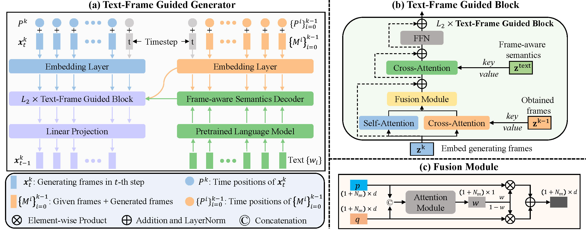
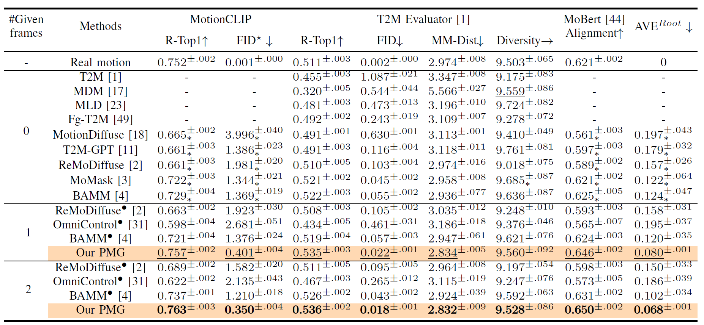
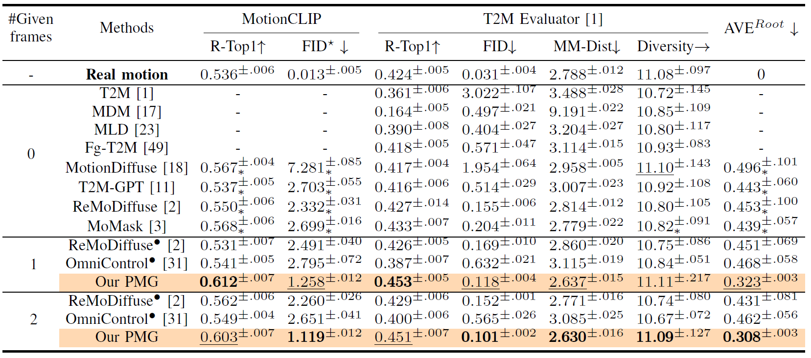

Although existing text-to-motion (T2M) methods can produce realistic human motion from text description, it is still difficult to align the generated motion with the desired postures since using text alone is insufficient for precisely describing diverse postures. To achieve more controllable generation, an intuitive way is to allow the user to input a few motion frames describing precise desired postures. Thus, we explore a new Text-Frame-to-Motion (TF2M) generation task that aims to generate motions from text and very few given frames. Intuitively, the closer a frame is to a given frame, the lower the uncertainty of this frame is when conditioned on this given frame. Hence, we propose a novel Progressive Motion Generation (PMG) method to progressively generate a motion from the frames with low uncertainty to those with high uncertainty in multiple stages. During each stage, new frames are generated by a Text-Frame Guided Generator conditioned on frame-aware semantics of the text, given frames, and frames generated in previous stages. Additionally, to alleviate the train-test gap caused by multi-stage accumulation of incorrectly generated frames during testing, we propose a Pseudo-frame Replacement Strategy for training. Experimental results show that our PMG outperforms existing T2M generation methods by a large margin with even one given frame, validating the effectiveness of our PMG.



@article{pmg,
title={Progressive Human Motion Generation Based on Text and Few Motion Frames},
author={Zeng, Ling-An and Wu, Gaojie and Wu, Ancong and Hu, Jian-Fang and Zheng, Wei-Shi},
journal={IEEE Transactions on Circuits and Systems for Video Technology},
year={2025},
publisher={IEEE}
}